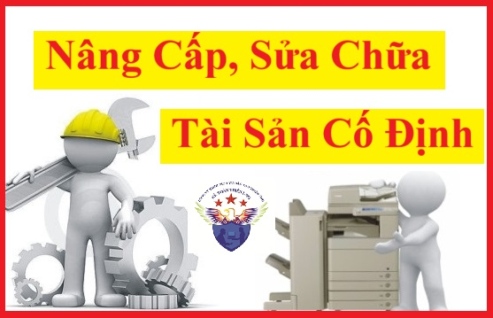

Nâng cấp tài sản cố định là hoạt động cải tạo, xây lắp, trang bị bổ sung thêm cho TSCĐ nhằm nâng cao công suất, chất lượng sản phẩm, tính năng tác dụng của TSCĐ so với mức ban đầu hoặc kéo dài thời gian sử dụng của TSCĐ; đưa vào áp dụng quy trình công nghệ sản xuất mới làm giảm chi phí hoạt động của TSCĐ so với trước.
Sửa chữa tài sản cố định là việc duy tu, bảo dưỡng, thay thế sửa chữa những hư hỏng phát sinh trong quá trình hoạt động nhằm khôi phục lại năng lực hoạt động theo trạng thái hoạt động tiêu chuẩn ban đầu của tài sản cố định.
Quy định về việc đầu tư nâng cấp sửa chữa TSCĐ đang được thực hiện theo Điều 7 của thông tư 45/2013/TT-BTC như sau:
1. Các chi phí doanh nghiệp chi ra để đầu tư nâng cấp tài sản cố định được phản ánh tăng nguyên giá của TSCĐ đó, không được hạch toán các chi phí này vào chi phí sản xuất kinh doanh trong kỳ.

2. Các chi phí sửa chữa tài sản cố định không được tính tăng nguyên giá TSCĐ mà được hạch toán trực tiếp hoặc phân bổ dần vào chi phí kinh doanh trong kỳ, nhưng tối đa không quá 3 năm.
Đối với những tài sản cố định mà việc sửa chữa có tính chu kỳ thì doanh nghiệp được trích trước chi phí sửa chữa theo dự toán vào chi phí hàng năm. Nếu số thực chi sửa chữa tài sản cố định lớn hơn số trích theo dự toán thì doanh nghiệp được tính thêm vào chi phí hợp lý số chênh lệch này. Nếu số thực chi sửa chữa tài sản cố định nhỏ hơn số đã trích thì phần chênh lệch được hạch toán giảm chi phí kinh doanh trong kỳ.
3. Các chi phí liên quan đến TSCĐ vô hình phát sinh sau ghi nhận ban đầu được đánh giá một cách chắc chắn, làm tăng lợi ích kinh tế của TSCĐ vô hình so với mức hoạt động ban đầu, thì được phản ánh tăng nguyên giá TSCĐ. Các chi phí khác liên quan đến TSCĐ vô hình phát sinh sau ghi nhận ban đầu được hạch toán vào chi phí sản xuất kinh doanh.